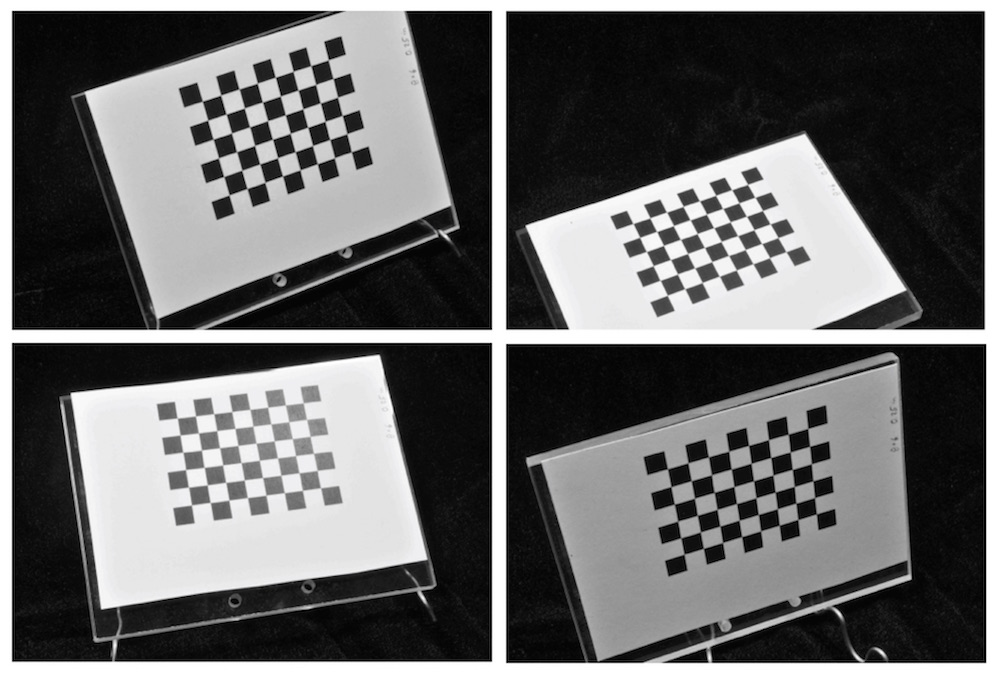
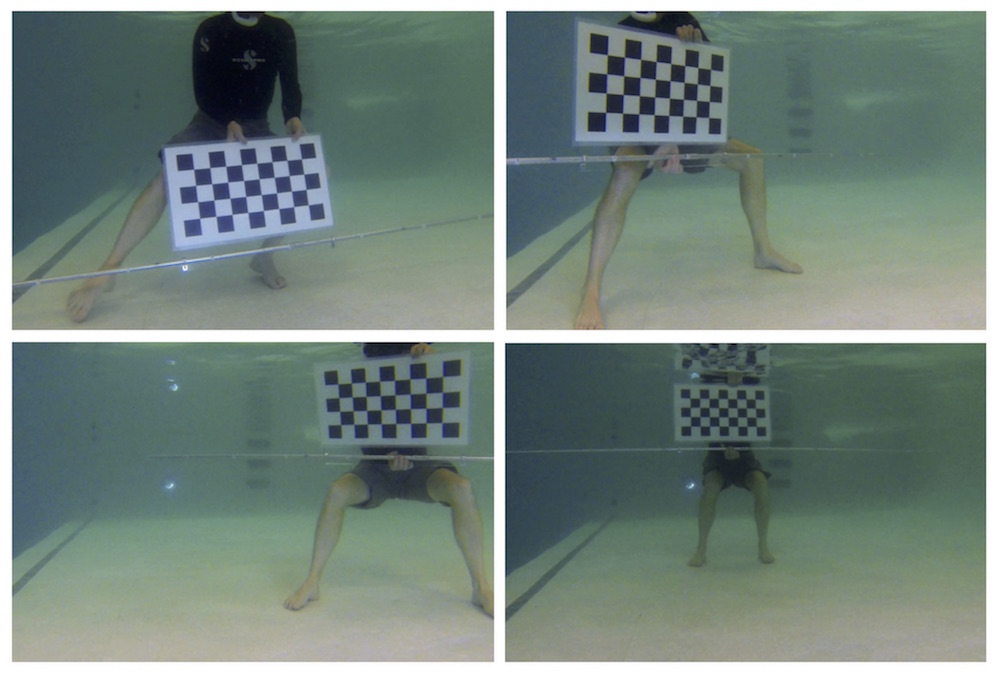

3.1 Choosing a good checkerboard size
Camera calibration in StereoMorph is based on a checkerboard pattern. The checkerboard provides a sampling of points in a plane that can easily be detected automatically. This saves the user time by not having to manually identify calibration points. A series of images or frames must be captured with the checkerboard in different positions and orientations throughout the space to be calibrated.
The size of the whole checkerboard pattern will depend on the scale of your application. To determine the size you need, first estimate the volume of space that you want to calibrate - this is the volume of space that visible from two or more cameras. If the minimum dimension of this space is less than approximately 0.5 m, then the entire checkerboard pattern should be about half the minimum dimension of the volume.
For example, for a calibrated volume with approximate dimensions of 0.3 m x 0.35 m x 0.4 m, a checkerboard pattern measuring 0.15 m along one dimension should be ideal. This allows the checkerboard pattern to be moved around the space and rotated while maintaining the entire pattern within the image frame.
Alternatively, if you're calibrating a volume with minimum dimensions larger than 0.5 m it will become difficult to print and manipulate a sufficiently large checkerboard pattern. For minimum dimensions larger than 1 m (for example, for a calibrated volume measuring 2 m x 3 m x 4 m), a checkerboard pattern measuring 0.5 m along one dimension should work well.
